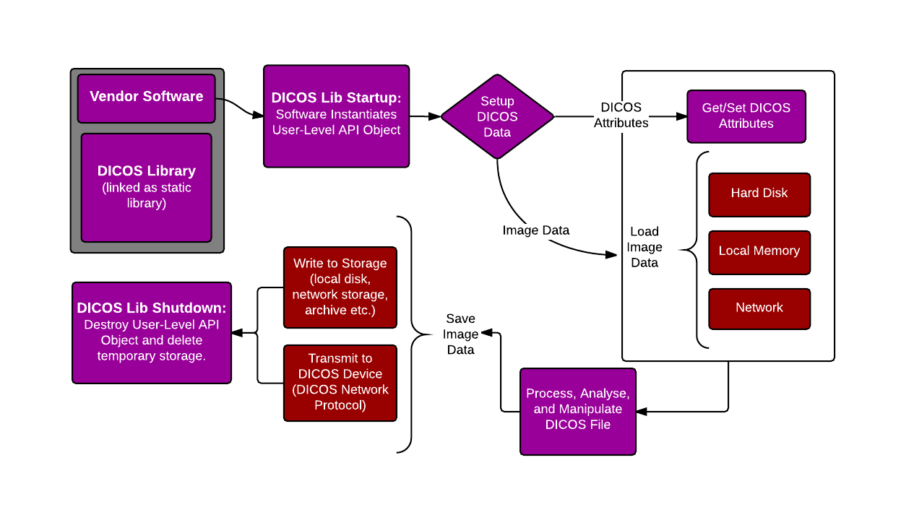
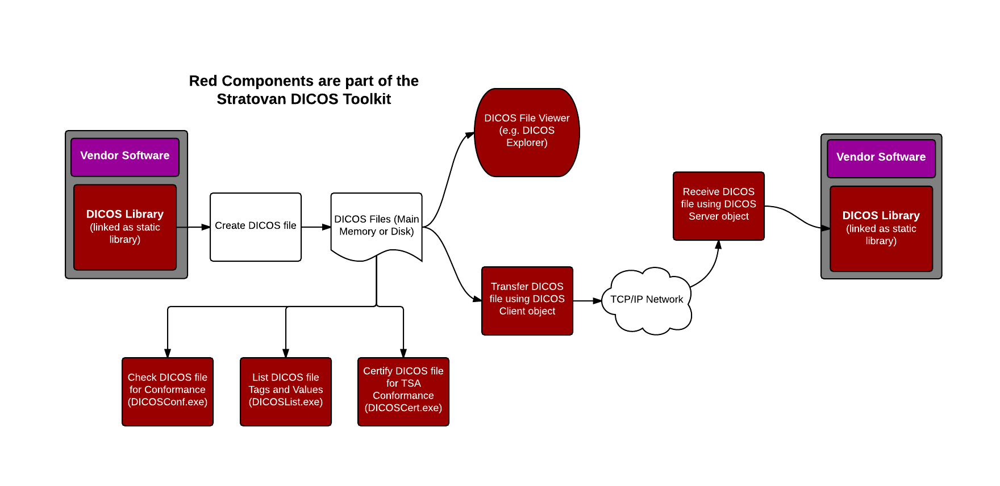

DICOS Usage in Security Software Applications
DICOS Library Integration in a Vendor's Application Software
This image shows the detailed integration of the DICOS Library into a Vendor's application software. The tasks listed below are all performed using the DICOS Library.
-
Vendor Software incorporates the DICOS Library from the Stratovan DICOS Toolkit
-
Within the Vendor's application, a User-Level API object is created and set with data for the various DICOS attributes needed for that file type.
-
The application transforms the volume data to its final state and adds it to the DICOS file
-
Finally the DICOS file is written to a memory buffer, disk, or to another DICOS device over the network.

Stratovan DICOS Toolkit Integration with Vendor Software
DICOS Toolkit Integration into various components of a Vendor's Application Development Workflow
This image shows typical workflow actions that a vendor application or application developer would perform using the Stratovan DICOS Toolkit. The three main tasks that the DICOS Library and Toolkit facilitate are:
-
Ensuring that Vendor applications create valid DICOS files.
-
Reading and writing DICOS files from disk, memory buffer or over a network connection.
-
Validating that DICOS files generated from other sources are conformant to the DICOS specification, TSA DICOS specifications or other 3rd party specifications.

DICOS Toolkit Integration with Vendor's Application Development Workflow

 1.8.18
1.8.18